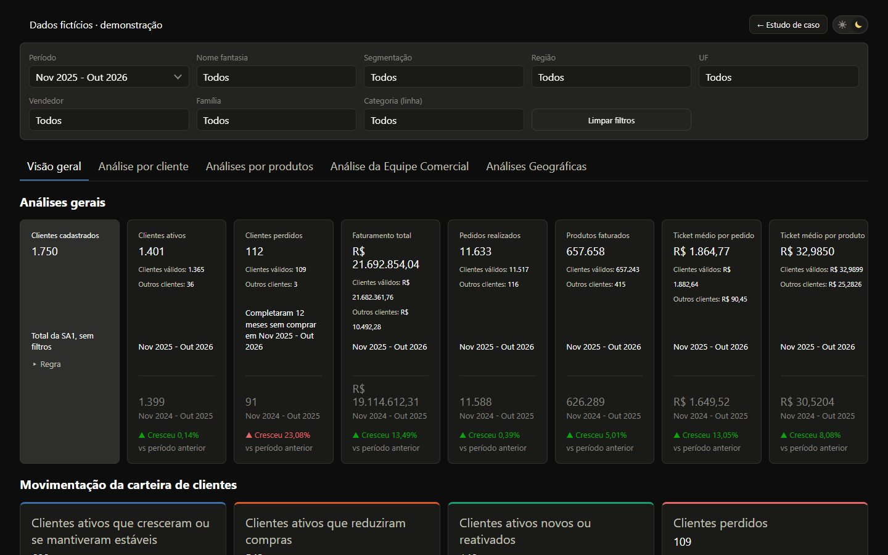
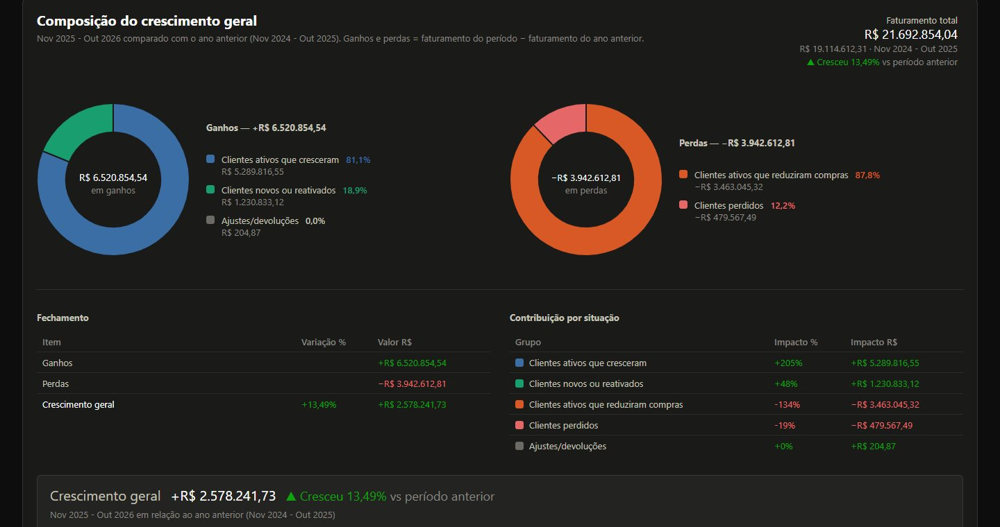
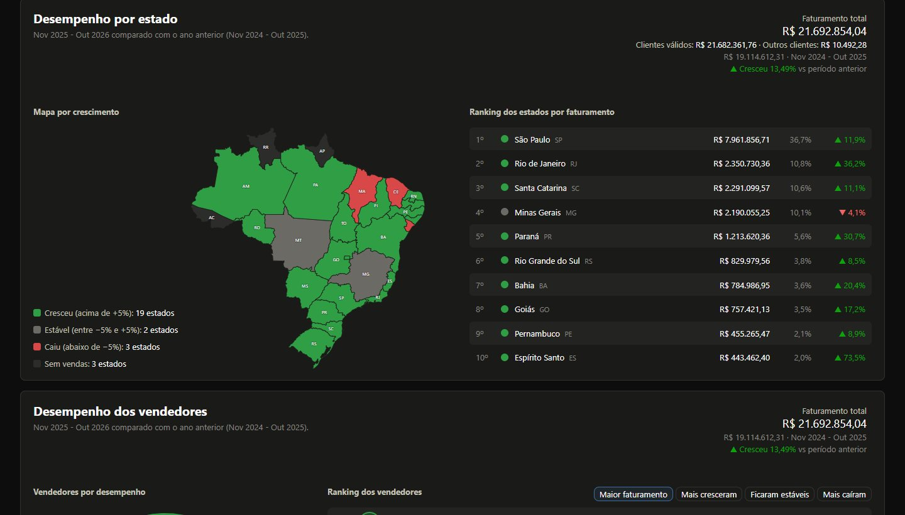
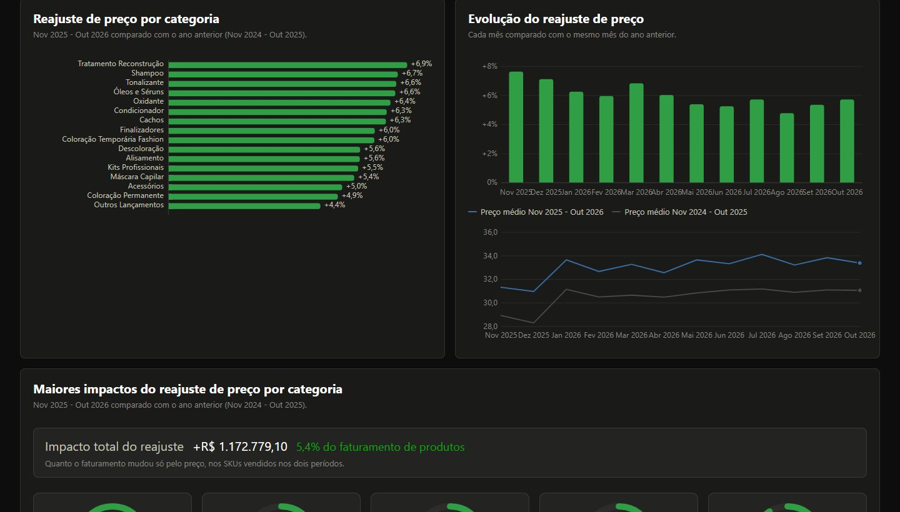
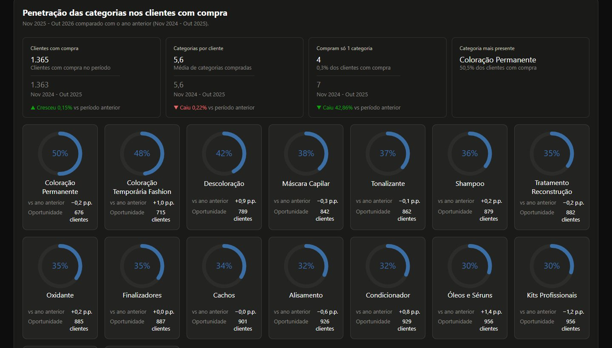
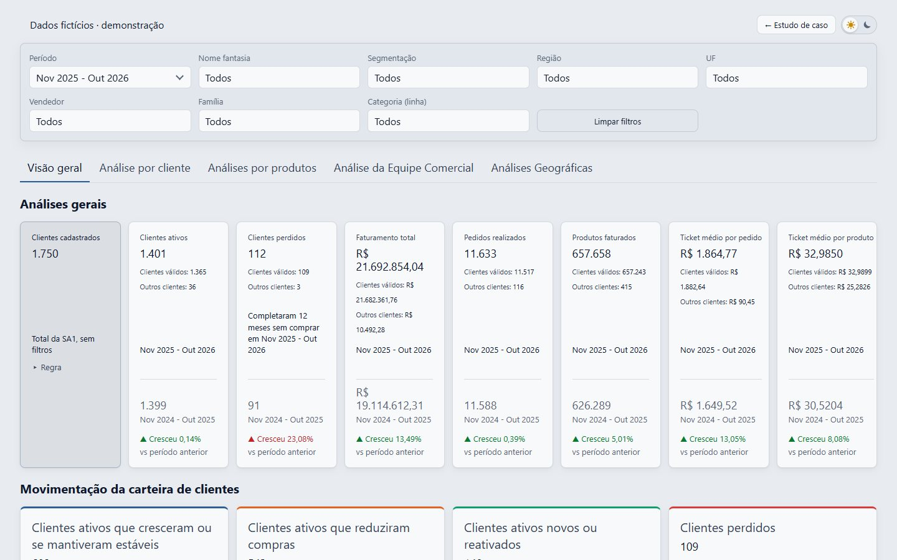

Do ERP ao painel 24/7.
Como transformamos doze extrações soltas de um ERP e de um BI em um diagnóstico comercial confiável: modelagem fato/dimensão, banco na nuvem, pipeline de carga, um painel interativo feito do zero, validação número a número contra a fonte oficial e implantação rodando o dia inteiro.

Muitos relatórios, nenhum diagnóstico.
A área comercial de uma indústria de cosméticos profissionais vende para distribuidores, redes de perfumaria, lojas, salões e farmácias em todo o país. Os dados existiam, mas espalhados: cadastros no ERP, vendas em relatórios de BI, agendas de demonstradoras em tabelas customizadas e um relatório oficial de faturamento usado pela diretoria. Cada pergunta virava uma planilha nova, e duas planilhas raramente davam o mesmo número.
“Quem comprou, quem parou, quem cresceu, por quê, e onde?”, respondido em um lugar só, com um número que bate com o oficial.
Quem está comprando?
Clientes ativos, novos, reativados, perdidos (12 meses sem comprar) e quem cresceu ou reduziu frente ao ano anterior.
De onde veio o resultado?
Decomposição do crescimento por situação do cliente, segmentação, estado, vendedor, categoria e efeito do reajuste de preço.
Antes do código, a ideologia.
Combinamos com a área de negócio um conjunto curto de princípios. Eles resolveram dezenas de discussões depois: quando surgia uma dúvida, a resposta já estava escrita.
O negócio decide a regra; o dado obedece
Toda regra (o que é cliente ativo, perdido, novo; o que conta como pedido) foi definida pela área comercial, documentada e aplicada igual em todo o sistema.
Todo faturamento conta
Nada é descartado em silêncio. Produto sem cadastro vira “sem classificação”; devolução entra com sinal negativo; funcionário entra no total, mas não como cliente.
Um cliente é um nome fantasia
Mesmo nome fantasia = mesmo cliente, em qualquer filial e mesmo com CNPJ novo. Quando são empresas diferentes, a correção é feita na origem (o cadastro), não com exceção no código.
Nenhum número sem conferência
Cada visão foi validada contra o relatório oficial antes de ser liberada. Diferença encontrada tem explicação escrita ou correção.
Do macro para o micro
A página conta uma história de cima para baixo: indicadores gerais → movimentação da carteira → composição do crescimento → segmentação → estados → vendedores → produtos.
Todo número é um filtro
Clicar em qualquer barra, fatia, estado, linha ou cartão filtra a página inteira. Os filtros se acumulam, aparecem como selos e saem com um clique.
Mapeando as bases dentro do sistema.
A primeira entrega não foi código: foi um inventário. Para cada pergunta do negócio, localizamos a tabela que a responde no ERP (TOTVS Protheus) ou no BI, entendemos o grão (o que é uma linha) e anotamos a armadilha de cada uma. Essas armadilhas viraram as regras do capítulo 04.
| Base | Onde está | O que traz | Armadilha encontrada |
|---|---|---|---|
Clientes SA1 | ERP | Filial, código, loja, CNPJ, nome fantasia, segmentação, vendedor atual | Funcionários com CPF, cadastros de teste, duplicados e a mesma loja com CNPJ trocado |
Vendedores SA3 | ERP | Código, nome e situação | O vendedor atual do cadastro não é o vendedor da venda: o histórico vem do fato |
Produtos SB1 | ERP | Código, descrição, tipo, GTIN | Produto faturado fora do cadastro válido não pode sumir do faturamento |
Grupos SBM | ERP | Categoria (linha) de cada produto | Produto sem grupo precisa de uma categoria explícita |
Agendas ZVX / ZVY | ERP (tabelas customizadas) | Agenda mensal de cada demonstradora e as lojas atendidas | Uma agenda genérica da própria empresa não é demonstradora e não pode contar |
| Faturamento por produto | BI | Dia × cliente × vendedor × produto: quantidade, preço sem bonificação, valor | A quantidade de pedidos se repete em cada linha de produto: somar duplica |
| Pedidos por cliente | BI | Dia × cliente × vendedor: quantidade de pedidos e faturamento | É a única base em que pedidos podem ser somados |
| Sell in | BI | Mês × produto × cliente | Define a data de lançamento (primeira venda) de cada produto |
| Filiais e demonstradoras | BI (dimensões) | Nomes das filiais; CPF e nome das demonstradoras | Complementam cadastros, mas não decidem quem teve atendimento |
| Faturamento oficial | ERP (relatório) | O número que a diretoria usa | Não alimenta o painel: é a régua de validação de cada carga |
Um caminho único, da extração ao clique.
Desenhamos o fluxo antes de escrever a primeira linha de carga. Cada base entra por uma etapa de tratamento com responsabilidade única, vira dimensão ou fato no banco e chega ao navegador num pacote compacto. Nenhuma tela lê arquivo bruto.
Limpar sem perder: cada exclusão tem um motivo.
O cadastro de clientes é o coração do diagnóstico, e também a base mais suja. A etapa de tratamento separa o que é cliente do que não é, sem apagar nada: cada cadastro desconsiderado vai para um relatório com o motivo e continua visível no painel, na tabela “Cadastro geral”. Abaixo, o funil com os números da base fictícia desta versão:
Regras que viraram código
Janela móvel de 37 meses
O mês mais recente das bases define a janela: ele e os 36 anteriores. O mês em andamento fica marcado como parcial, e a comparação usa o mesmo período do ano anterior.
Unificação por nome fantasia
Cadastros com o mesmo nome (sem acento, espaço e pontuação) viram um cliente, que herda cidade, segmentação e vendedor do cadastro da compra mais recente.
Situação do cliente
Ativo: comprou no período. Perdido: completou 12 meses sem comprar dentro do período. Novo ou reativado: sem compra nos 12 meses anteriores. Cresceu ou reduziu: contra o mesmo período do ano anterior.
Reajuste de preço
Faturamento atual ÷ (peças atuais × preço do ano anterior) − 1, só com SKUs vendidos nos dois períodos. Assim, preço não se confunde com volume nem com mix.
Um modelo estrela com o grão certo.
A decisão mais importante da modelagem foi o grão de cada fato. O faturamento por produto não sabe quantos pedidos houve, e a base de pedidos não sabe quais produtos foram comprados. Em vez de forçar uma tabela única, mantivemos dois fatos com grãos diferentes, cada um responsável pelos indicadores que consegue somar sem erro, e um evento que liga os produtos à compra do dia.
fato_faturamento_produto
Peças, peças pagas (sem bonificação) e valor. É a fonte de faturamento por produto, categoria, preço médio e reajuste.
fato_pedidos_cliente
A única tabela em que pedidos podem ser somados. Daqui saem os pedidos e o ticket médio por pedido.
evento_compra_mix
Liga os produtos à compra do dia (filial + cliente + loja + vendedor + data), para analisar mix e penetração de categorias.
MongoDB Atlas como camada analítica.
Escolhemos o MongoDB Atlas pela facilidade de operar na nuvem sem servidor de banco próprio e pela carga em lote (bulk) rápida. As coleções seguem o modelo estrela, com índices pelas chaves de negócio e pelos campos de data. Além das tabelas analíticas, o banco guarda o que dá segurança operacional ao processo:
Cada carga é um lote
Registra o que foi recebido, aceito e rejeitado, a janela de meses e o status de publicação.
Histórico com desfazer
Quem importou, quando, quanto tempo levou, o pico de memória de cada etapa e o botão para desfazer a última importação.
Acesso protegido
Senhas com scrypt e sal, bloqueio após 5 tentativas e redefinição por e-mail com link de uso único.
A carga nunca substitui a versão publicada antes de passar pela validação. Se uma base vier fora do padrão, o painel continua com a carga anterior, e quem importou recebe uma mensagem em linguagem simples, como “Arquivo aberto em outro programa” ou “O arquivo de clientes parece fora do padrão”, em vez de um erro técnico.
Onze etapas, um botão.
O backend é Node.js puro, sem framework: um servidor HTTP e scripts de carga com uma responsabilidade cada. Quem importa só escolhe os arquivos no navegador. O servidor valida as colunas, decide entre carga rápida (só cadastros auxiliares, cerca de 3 minutos) e carga completa (fatos, cerca de 20 minutos), roda as etapas e mostra o andamento. Tempos e picos de memória medidos numa carga real:
Tratar clientes (SA1)
exclusões, duplicados, relatórios de motivo
Tratar vendedores (SA3)
situação e código padronizado
Consolidar clientes e vendedores
carteira atual e cadastro completo
Produtos, categorias e agendas
GTIN, categoria, demonstradoras
Filiais
de-para fixo
Dimensões no banco
upsert sem trocar identificadores
Fatos no banco
unificação de clientes, janela de 37 meses, bulk write
Auditar exclusões
tudo que não entrou tem motivo
Conferir com o faturamento oficial
mês a mês e cliente a cliente
Gerar o pacote do painel
dimensões + vetores binários
Validar o pacote
totais e estrutura antes de publicar
Unificação de clientes
A regra “um cliente é um nome fantasia” resolve lojas que trocam de CNPJ e cadastros repetidos entre filiais. Cada grupo fica com o cadastro da compra mais recente, para valer o cadastro atual (cidade, segmentação e vendedor).
// Mesmo nome fantasia = mesmo cliente, em qualquer filial.
const chave = (nome) => nome.normalize("NFD")
.replace(/[̀-ͯ]/g, "")
.replace(/[^A-Za-z0-9]/g, "").toUpperCase();
for (const [cadastro, nome] of nomeDoCadastro)
unir(cadastro, `nome:${chave(nome)}`);
// Cada grupo usa o cadastro da compra mais recente.
const principal = grupo.sort(porUltimaCompra)[0];Um painel feito do zero, que calcula no navegador.
Nenhuma biblioteca de gráficos, nenhum framework. O servidor entrega um pacote com as dimensões e os fatos em vetores binários (inteiros em base64). Mais de um milhão de linhas de faturamento cabem em poucos megabytes, e o motor de cálculo no navegador recalcula todos os indicadores a cada filtro, sem ida ao servidor.
// Exportação: cada coluna do fato vira um vetor tipado.
const F = {
p: new Uint8Array(n), // período
c: new Uint16Array(n), // cliente
pr: new Uint16Array(n), // produto
val: new Int32Array(n), // valor em centavos
};
// No navegador: decodifica uma vez, recalcula a cada clique.
const val = new Int32Array(bytes(D.fato.val).buffer);O que o motor entrega
Situação de cada cliente, ponte do crescimento (ganhos e perdas por situação), penetração de categorias, reajuste por SKU, carteira por vendedor, ranking de estados e o detalhe dia a dia de um cliente.
Tudo com comparação automática contra o mesmo período do ano anterior, ou contra o período imediatamente anterior.




Iterar com quem usa.
O painel foi construído em ciclos curtos com a área comercial, com uma rodada de ajustes por sessão. Cada pedido virou um padrão de interface aplicado em todas as telas, e não um remendo pontual. Algumas mudanças:

Bater no centavo, ou explicar a diferença.
A validação foi tratada como entrega, não como etapa final. Cada visão foi comparada com o relatório oficial ou com o BI, linha a linha, nos 37 meses. As diferenças encontradas renderam algumas das melhores decisões do projeto:
| O que validamos | Contra | Resultado | O que aprendemos |
|---|---|---|---|
| Faturamento por mês e por vendedor | Relatório oficial | Bate | Diferenças no mês corrente vinham só de extrações feitas em horários diferentes. |
| Pedidos | BI | Bate | O BI contava o número do pedido, que se repete entre filiais. O certo é filial + número, e a referência correta era a soma com a filial nas linhas, não o total consolidado. |
| Segmentação e estados | Relatório oficial | Bate | As diferenças por estado vinham de nomes fantasia repetidos em estados diferentes. A correção foi no cadastro, e a regra continuou simples. |
| Categorias e produtos | BI | Bate | Todos os SKUs batem em valor e quantidade; só o nome de uma categoria técnica difere. |
| Clientes que mais cresceram e caíram | Base bruta | Bate | Conferidos cliente a cliente a partir das extrações originais. |
| Lojas com demonstradora | BI | Decisão | O BI ligava demonstradoras até a devoluções de lojas sem agenda. A área comercial escolheu a agenda como fonte da verdade, e a divergência ficou documentada. |
Validar não é provar que o painel está certo. É descobrir onde as fontes discordam e deixar a decisão com quem entende do negócio.
No ar o dia inteiro, por US$ 11 por mês.
O painel saiu de um servidor local para a nuvem, com três requisitos: acesso só por link (sem login no painel), importação das bases de qualquer computador e nenhum dado da empresa no repositório de código.
- bases, planilhas e senhas fora do repositório
- cada push publica sozinho
- link secreto: sem a chave, tudo dá 404
- importação com login e envio compactado
- carga completa no próprio servidor
- fatos e dimensões
- bases e pacote do painel espelhados (GridFS, gzip)
Disco que some a cada deploy
O servidor da nuvem começa vazio a cada publicação. As bases e o pacote do painel ficam espelhados no Atlas, compactados (601 MB viram 49 MB). Ao iniciar, o servidor baixa o que falta; ao fim de cada carga, envia o que mudou.
23 MB que viraram 3,3 MB
O pacote do painel vai compactado e com ETag. Na segunda visita, sem carga nova, o navegador não baixa nada: recebe só “não mudou” (304).
Link secreto sem login
O painel só responde em /<chave>/. Fora dela, qualquer endereço dá “Não encontrado”. Os cabeçalhos impedem indexação e vazamento da chave pelo Referer. Se o link vazar, basta trocar a chave.
// Sem a chave no caminho, o servidor não revela nem que existe.
if (chaveAcesso) {
const prefixo = `/${chaveAcesso}`;
if (!rota.startsWith(`${prefixo}/`)) return naoEncontrado(response);
rota = rota.slice(prefixo.length);
}O mesmo painel, com uma empresa que não existe.
Esta versão de portfólio roda inteira no GitHub Pages, sem banco e sem servidor. O código do painel é o mesmo da versão em produção. Só o pacote de dados foi trocado por uma base fictícia, criada por um gerador próprio para a Aurora Cosméticos Profissionais, uma indústria inventada.
1.822 cadastros
Redes com várias lojas, mesma loja com CNPJ novo, funcionários e cadastros inválidos.
169 mil linhas
37 meses com sazonalidade, reajustes anuais, bonificações e devoluções.
Clientes vivos
Novos, perdidos, reativados e troca de carteira entre vendedores.
46 demonstradoras
Agendas mensais que aumentam a compra das lojas atendidas.
O gerador usa uma semente fixa (o resultado é sempre o mesmo) e grava o pacote no formato exato que o pipeline real exporta do banco. Por isso todos os filtros, cliques, mapas, tabelas, a exportação em CSV e o tema funcionam como na produção. Nenhum nome, CNPJ, cliente, vendedor ou valor vem de dados reais.
Tecnologias
Clique em qualquer número e veja a página inteira responder.
Sugestão de roteiro: na Visão geral, clique em “Clientes perdidos”, depois num estado do mapa, e abra a aba Análise por cliente. Os filtros vão junto, como selos no topo.